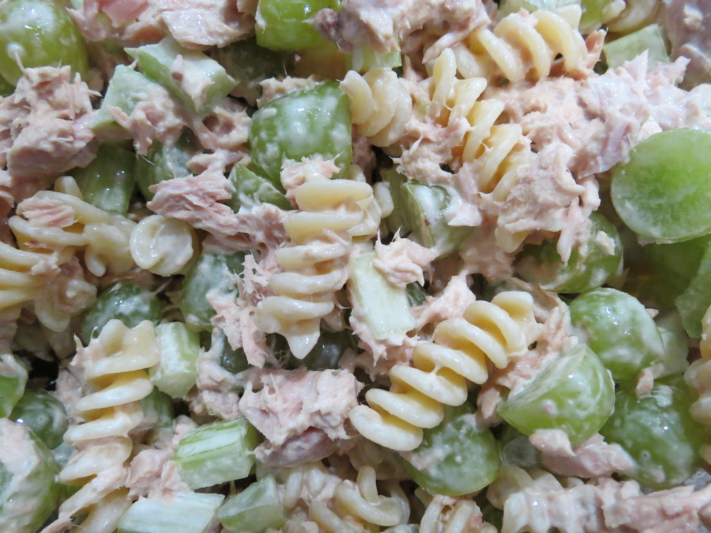

Tuna Salad

Description
This is a chilled pasta salad that you can make ahead of time, to snack on, or serve as a side at a party. It will last for 2 days in the fridge, and is best prepared atleast 3-4 hours ahead of time to let everything cool down.
A chilled tuna salad with your favorite vegetables!
Ingredients
- 1lb box of your pasta of choice (rotini or shells work great)
- 1 Large can of SOLID tuna, chunk light is GROSS!
- 1/3 cup of Mayonnaise
- 1/2 of a small white onion, or 1/4 of a large white onion
- 1 Tbsp dill
- Salt & pepper to taste
- A green vegetable of your choice (peas, celery, olives are all great)
Steps
- Bring your water to a boil (enough water to fully cover the pasta plus an inch)
- While the water boils, combine the tuna and mayo in a separate bowland mash together with a spoon or fork
- Cook the pasta fully. Al dente is not desirable when chilled
- Dice or chop your onion based on your preference
- If your vegetables are raw, blanche or cook them (blanching is best to maintain crunchiness)
- Let everything cool, you can put in the fridge to expedite this
- Combine the pasta tuna mix, and vegetables in a large bowl, and add your seasonings
- If necessary you can add more mayo for creaminess, or more seasonings